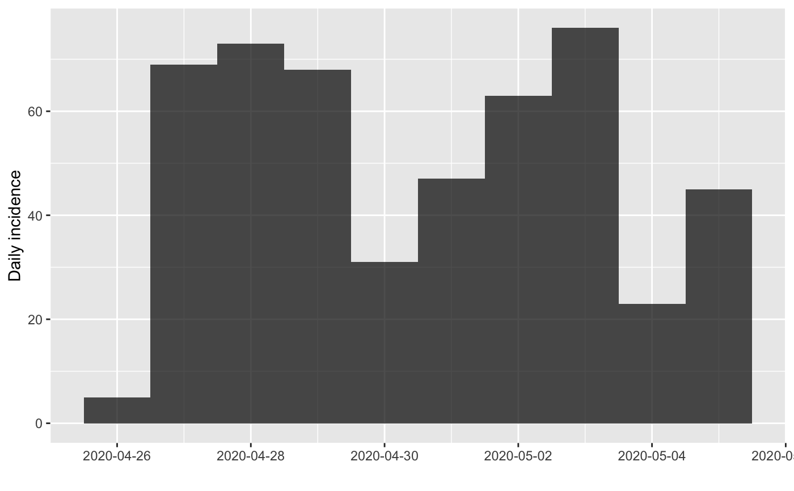
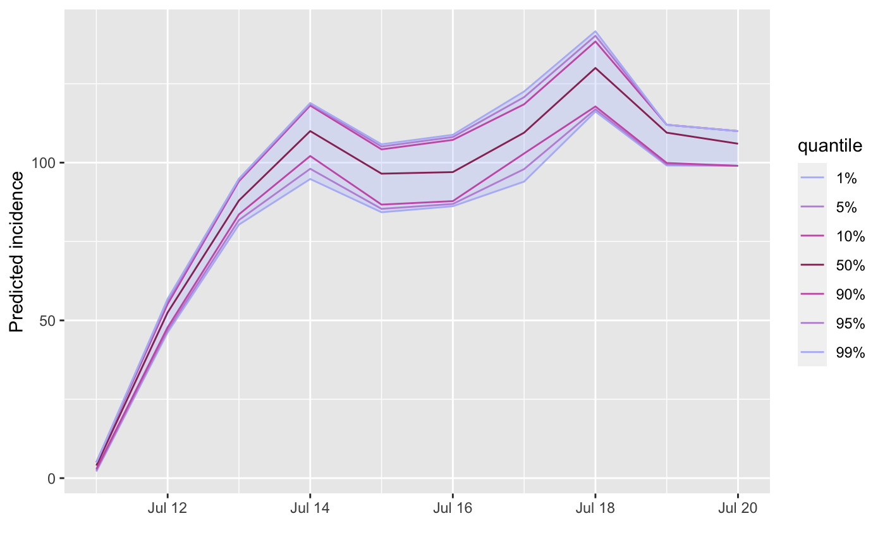
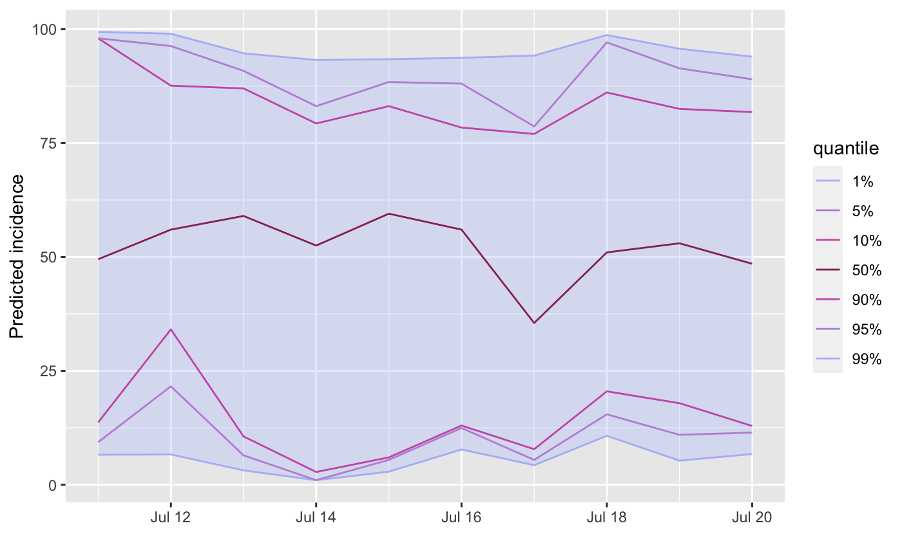
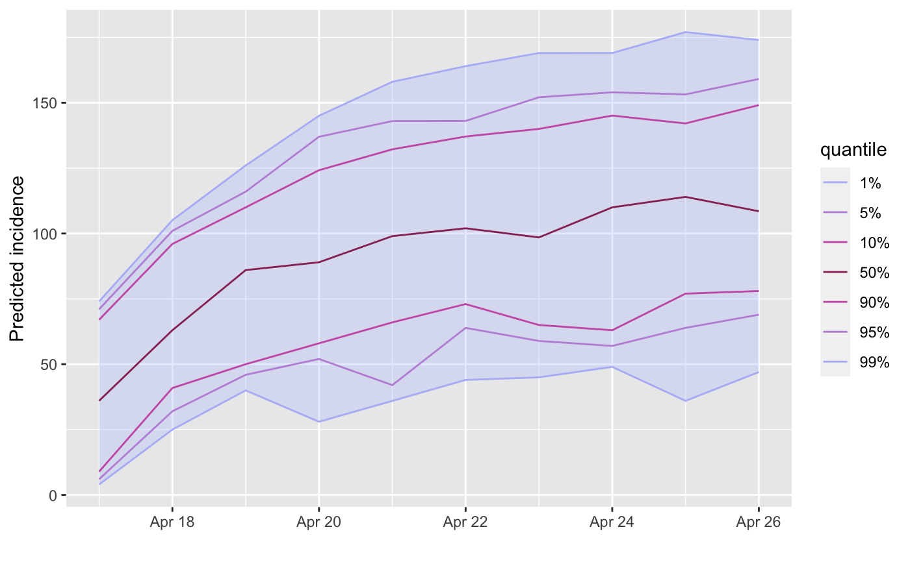

project_beds.RdThis function projects bed occupancy using admission incidence and a distribution of length of stay (los).
project_beds(x, ...) # S3 method for projections project_beds(x, r_los, n_sim = 10, last_date = NULL, ...) # S3 method for incidence project_beds(x, r_los, n_sim = 10, last_date = NULL, ...)
| x | Either a |
|---|---|
| ... | Additional arguments passed to other methods. |
| r_los | A |
| n_sim | The number of times duration of hospitalisation is simulated for each admission. Defaults to 10. Only relevant for low (<30) numbers of initial admissions, in which case it helps accounting for the uncertainty in LoS. |
| last_date | the last date to simulate until (defaults to the maximum
date of |
A projections object
produced from the admission trajectories.
## fake LoS; check \code{\link[distcrete:distcrete]{distcrete::distcrete}} ## for discretising existing distributions r_los <- function(n) rgeom(n, prob = .3) # Incidence input ## fake data dates <- Sys.Date() - 1:10 admissions <- sample(1:100, 10, replace = TRUE) x <- incidence::incidence(rep(dates, admissions)) x#> <incidence object> #> [500 cases from days 2020-04-17 to 2020-04-26] #> #> $counts: matrix with 10 rows and 1 columns #> $n: 500 cases in total #> $dates: 10 dates marking the left-side of bins #> $interval: 1 day #> $timespan: 10 days #> $cumulative: FALSE #>plot(x)## project bed occupancy beds <- project_beds(x, r_los) beds#> #> /// Incidence projections // #> #> // class: projections, matrix #> // 10 dates (rows); 10 simulations (columns) #> #> // first rows/columns: #> sim_1 sim_2 sim_3 sim_4 sim_5 sim_6 #> 2020-04-17 4 3 2 4 5 4 #> 2020-04-18 49 55 48 55 49 51 #> 2020-04-19 85 94 84 95 84 89 #> 2020-04-20 94 119 103 107 111 115 #> . #> . #> . #> #> // dates: #> [1] "2020-04-17" "2020-04-18" "2020-04-19" "2020-04-20" "2020-04-21" #> [6] "2020-04-22" "2020-04-23" "2020-04-24" "2020-04-25" "2020-04-26" #>plot(beds)# Projections input ## make fake data - each column after the first is a separate forecast admissions <- data.frame( date = Sys.Date() - 1:10, as.data.frame(replicate(30, sample(1:100, 10, replace = TRUE)))) x <- build_projections(x = admissions[, -1], dates = admissions$date) x#> #> /// Incidence projections // #> #> // class: projections, matrix #> // 10 dates (rows); 30 simulations (columns) #> #> // first rows/columns: #> V1 V2 V3 V4 V5 V6 #> 2020-04-17 8 17 36 95 100 89 #> 2020-04-18 36 52 99 2 80 57 #> 2020-04-19 45 16 87 37 11 73 #> 2020-04-20 56 43 1 22 35 65 #> . #> . #> . #> #> // dates: #> [1] "2020-04-17" "2020-04-18" "2020-04-19" "2020-04-20" "2020-04-21" #> [6] "2020-04-22" "2020-04-23" "2020-04-24" "2020-04-25" "2020-04-26" #>plot(x)## project bed occupancy beds <- project_beds(x, r_los) beds#> #> /// Incidence projections // #> #> // class: projections, matrix #> // 10 dates (rows); 300 simulations (columns) #> #> // first rows/columns: #> sim_1 sim_2 sim_3 sim_4 sim_5 sim_6 #> 2020-04-17 7 6 4 5 7 6 #> 2020-04-18 33 27 30 30 32 25 #> 2020-04-19 55 58 52 54 57 49 #> 2020-04-20 81 78 84 87 73 76 #> . #> . #> . #> #> // dates: #> [1] "2020-04-17" "2020-04-18" "2020-04-19" "2020-04-20" "2020-04-21" #> [6] "2020-04-22" "2020-04-23" "2020-04-24" "2020-04-25" "2020-04-26" #>plot(beds)